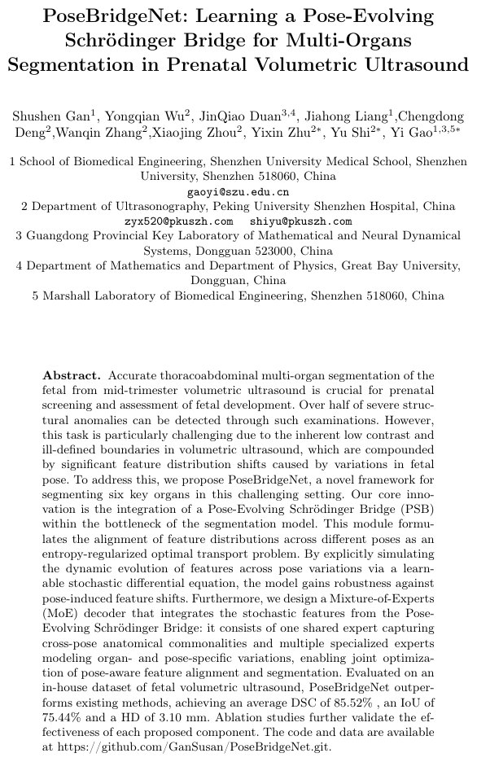
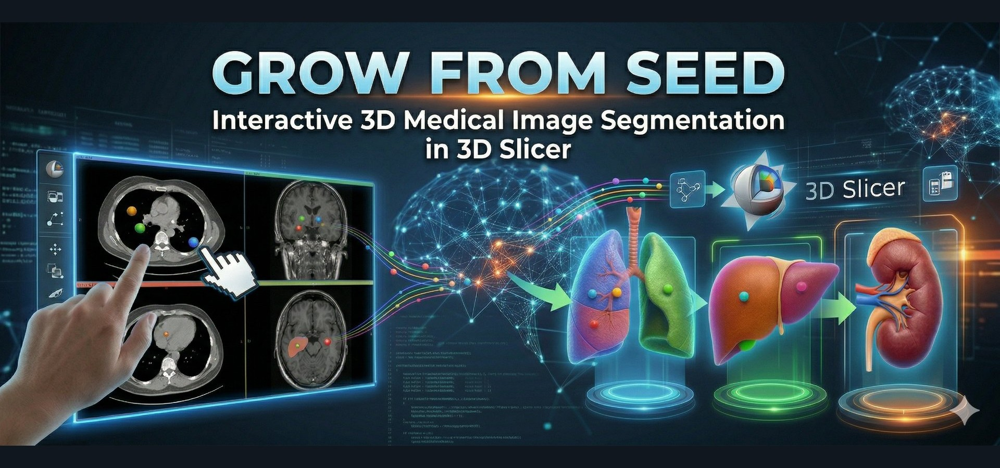
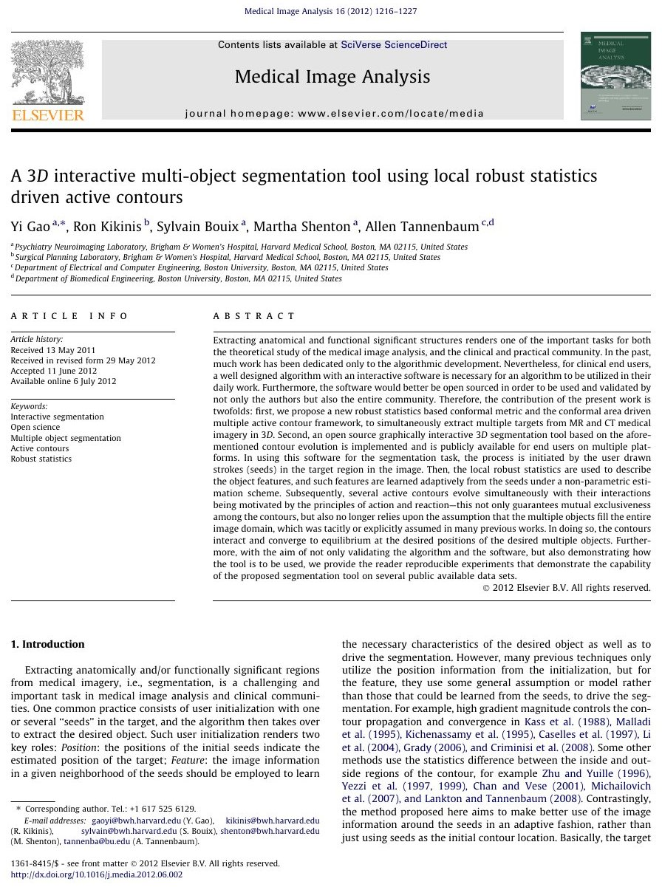
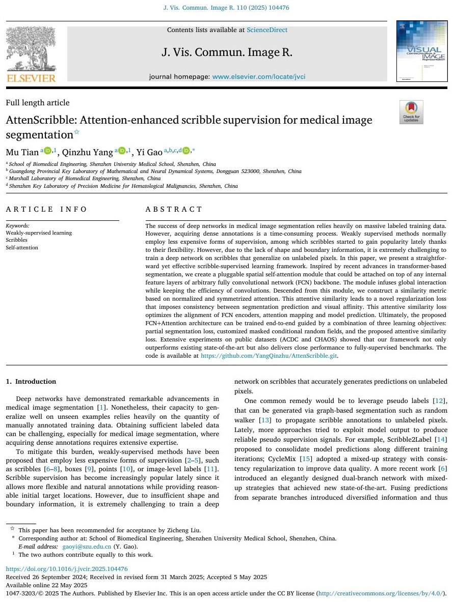
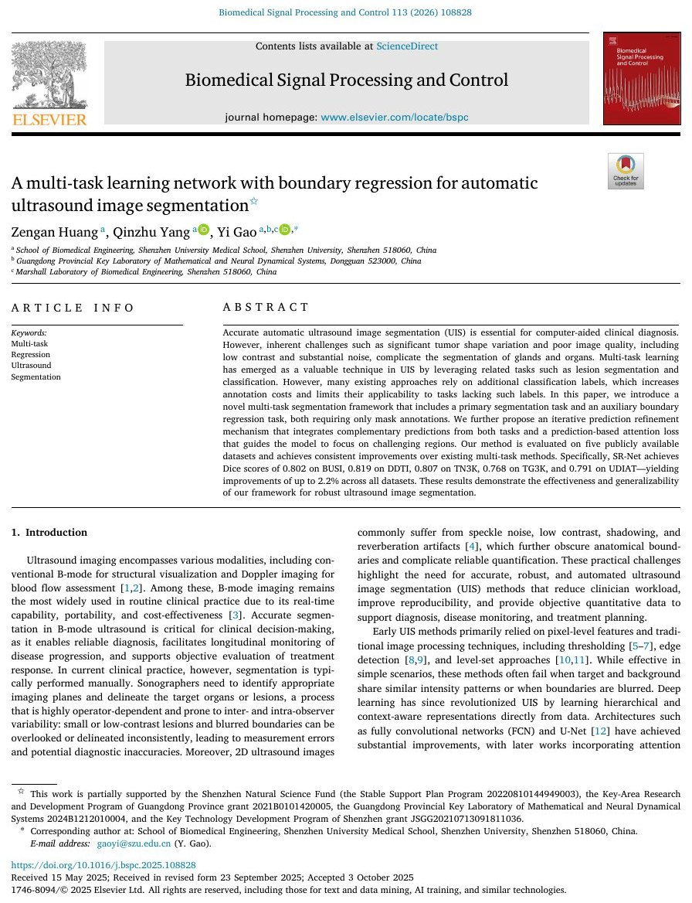
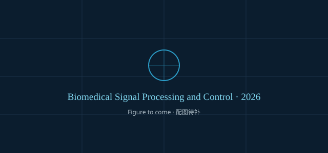
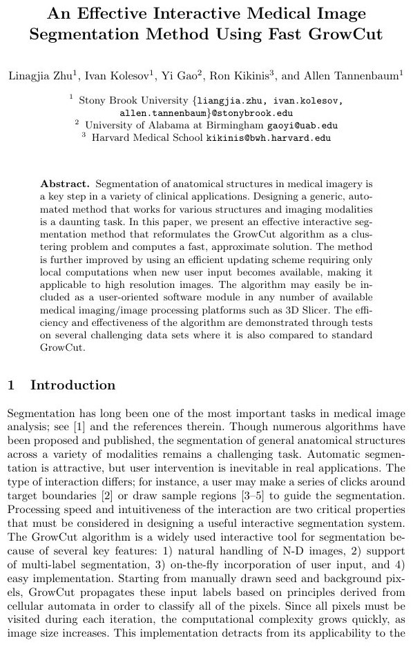

By Method · 01
Interactive 3D Image Segmentation
From robust-statistics active contours to deep learning: interactive segmentation that clinicians can steer with a few strokes, culminating in Grow From Seed — a core module of 3D Slicer since 2014.
Overview
From robust-statistics active contours to deep learning: interactive segmentation that clinicians can steer with a few strokes, culminating in Grow From Seed — a core module of 3D Slicer since 2014.
- Grow From Seed — 3D Slicer core module since 2014
- Robust-statistics multi-object segmentation (Medical Image Analysis 2012)
- Scribble supervision, deep equilibrium models, active learning
08 · Selected work
Selected work
Each card: figure on top, key points below.

PoseBridgeNet: Learning a Pose-Evolving Schrödinger Bridge for Multi-Organs Segmentation in Prenatal Volumetric Ultrasound
MICCAI · 2026
- Pose-evolving Schrödinger bridge for multi-organ segmentation in prenatal volumetric ultrasound.
- Handles pose variation across large-scale fetal screening scans.

An effective and open source interactive 3D medical image segmentation solution
Scientific Reports · 2024
- Grow From Seed: user-friendly interactive segmentation with a few strokes and real-time 3D feedback.
- Adopted as a core interactive segmentation module of 3D Slicer.

A 3D interactive multi-object segmentation tool using local robust statistics driven active contours
Medical Image Analysis · 2012
- Robust-statistics active contours for multi-object 3D segmentation.
- Foundation of the 3D Slicer segmentation modules.

AttenScribble: Attention-Enhanced Scribble Supervision for Medical Image Segmentation
Journal of Visual Communication and Image Representation · 2025
- Attention-enhanced scribble supervision reduces annotation cost.
- Weakly-supervised segmentation with scribble labels.
An efficient deep equilibrium model for medical image segmentation
Computers in Biology and Medicine · 2022
- Deep equilibrium models for memory-efficient segmentation.
- Infinite-depth behavior without storing intermediate states.

A multi-task learning network with boundary regression for automatic ultrasound image segmentation
Biomedical Signal Processing and Control · 2026
- Multi-task learning with boundary regression for ultrasound segmentation.
- Joint region and boundary supervision improves contour quality.

Cost-effective annotation: A novel deep active learning approach for Automated Whole Breast Ultrasound anatomy segmentation
Biomedical Signal Processing and Control · 2026
- Deep active learning cuts annotation cost for whole-breast ultrasound anatomy segmentation.
- Published in Biomedical Signal Processing and Control (earlier version: oral, CSBME annual meeting 2025).

An Effective Interactive Medical Image Segmentation Method Using Fast GrowCut
MICCAI Workshop on Interactive Medical Image Computing · 2014
- Fast GrowCut for interactive segmentation.
- Early interactive segmentation work integrated into Slicer workflows.